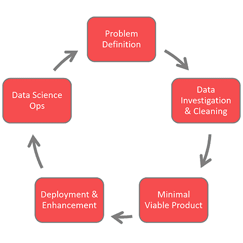

Data Science
Basic information about data science
Data science encompasses preparing data for analysis, including cleansing, aggregating, and manipulating the data to perform advanced data analysis Data science can be used to gain knowledge about behaviors and processes, write algorithms that process large amounts of information quickly and efficiently, increase security and privacy of sensitive data, and guide data-driven decision-making.
basic Statistics concepts that a Data Scientist
- Descriptive Statistics. ...
- Probability. ...
- Dimensionality Reduction. ...
- Central Tendency. ...
- Hypothesis Testing. ...
- Tests of significance. ...
- Sampling theory. ...
- Bayesian Statistics.
Data science
Data science is the field of study that combines domain expertise, programming skills, and knowledge of mathematics and statistics to extract meaningful insights from data.Data science is an essential part of many industries today, given the massive amounts of data that are produced, and is one of the most debated topics in IT circles. Its popularity has grown over the years, and companies have started implementing data science techniques to grow their business and increase customer satisfaction. In this article, we’ll learn what data science is, and how you can become a data scientist.

The Data Science Lifecycle
Data science’s lifecycle consists of five distinct stages, each with its own tasks:- Capture: Data Acquisition, Data Entry, Signal Reception, Data Extraction. This stage involves gathering raw structured and unstructured data.
- Maintain: Data Warehousing, Data Cleansing, Data Staging, Data Processing, Data Architecture. This stage covers taking the raw data and putting it in a form that can be used.
- Process: Data Mining, Clustering/Classification, Data Modeling, Data Summarization. Data scientists take the prepared data and examine its patterns, ranges, and biases to determine how useful it will be in predictive analysis.
- Analyze: Exploratory/Confirmatory, Predictive Analysis, Regression, Text Mining, Qualitative Analysis. Here is the real meat of the lifecycle. This stage involves performing the various analyses on the data.
- Communicate: Data Reporting, Data Visualization, Business Intelligence, Decision Making. In this final step, analysts prepare the analyses in easily readable forms such as charts, graphs, and Reports